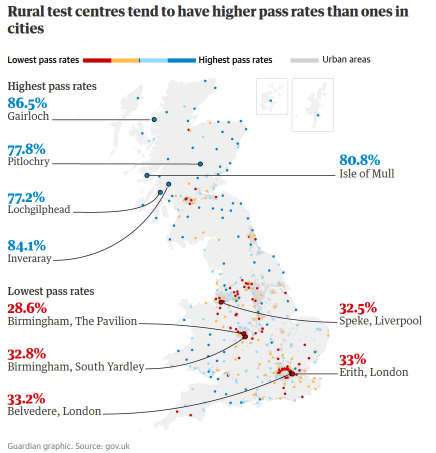
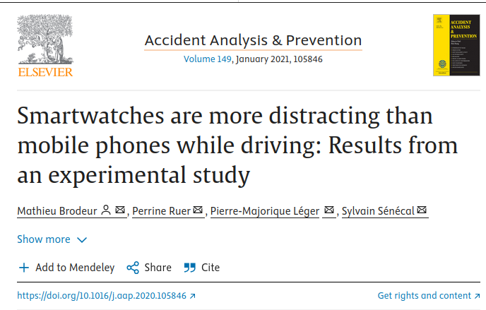
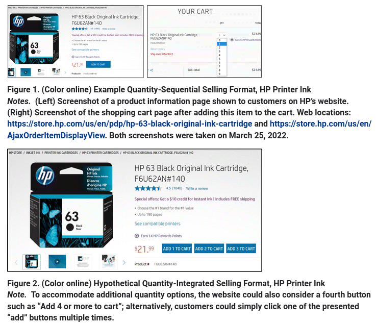
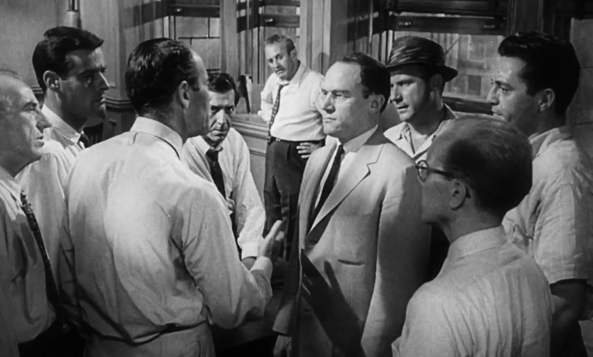
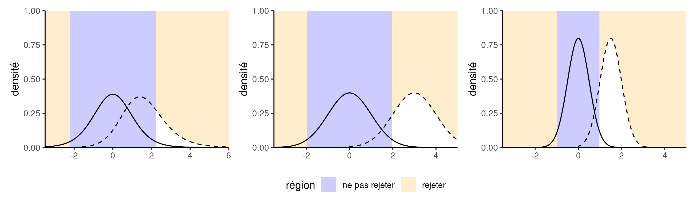

Modélisation statistique
01. Inférence statistique
Léo Belzile, HEC Montréal
2024
Inférence statistique
Étude d’une population
La loi d’une population (qui décrit les valeurs possibles et leur fréquence/probabilité) contient toute l’information nécessaire.
Variabilité échantillonale
Histogrammes de 10 échantillons aléatoires simples de taille 20 tirés d’une loi uniforme.
Prise de décisions avec incertitude
La statistique traite de la prise de décisions dans un contexte d’incertitude.
- La collecte de données est coûteuse.
- nous avons une quantité d’information limitée sur la population.
- on s’intéresse typiquement aux moments (moyenne théorique \(\mu\), écart-type \(\sigma\), etc.)
- Les échantillons sont typiquement trop petits pour estimer de manière fiable la loi de la population.
- on se base plutôt sur un modèle statistique pour obtenir des informations.
Pourquoi employer des modèles?
Ce cours traite de modélisation des données. Une citation célèbre attribuée à George Box dit que
tous les modèles sont faux, mais certains sont utiles.
McCullagh et Nelder (1989) expliquent dans le préambule de leur livre
La modélisation en science demeure, du moins partiellement, un art. Certains principes existent, en revanche, pour guider le modélisateur. Le premier est que tous les modèles sont faux; mais que certains sont meilleurs et le modélisateur doit chercher le meilleur à sa portée. En même temps, il est sage de reconnaître que la quête perpétuelle de la vérité n’est pas envisageable.
Plaidoyer pour la modélisation
Et David R. Cox de rajouter
…il n’est pas utile de simplement énoncer que tout modèle est faux. L’idée même de modèle sous-tend une notion de simplification et d’idéalisation. L’idée qu’un système physique, biologique ou sociologique complexe puisse être décrit de manière exacte par quelques formules est franchement absurde. La construction de représentations idéalisées qui capturent les aspects stables les plus importants du système est néanmoins une partie essentielle de toute analyse scientifique et les modèles statistiques ne diffèrent pas en cela d’autres types de modèles.
Quels sont les éléments d’un modèle
Un modèle stochastique (ou aléatoire) combine typiquement
- une loi pour les données avec
- une formule liant les paramètres ou la moyenne conditionnelle d’une variable réponse \(Y\) à des variables explicatives \(\mathbf{X}\)
Les modèles sont des “golems” qui servent à obtenir des réponses à nos questions.
Comment déterminer le modèle adéquat?
On se base notamment sur les informations suivantes
- plan de collecte de données
- quel est le méchanisme d’échantillonage?
- est-ce que les variables sont observées ou manipulées dans le cadre d’une expérience?
- la nature de la variable réponse
- décomptes, proportions, etc.
Nature des données
- Est-ce que les données forment un échantillon aléatoire simple ou pas?
- si oui, elles sont représentatives et on peut généraliser les conclusions à toute la population
- Est-ce que le “traitement” est assigné de manière aléatoire?
- si oui, on parle de données expérimentales (plutôt qu’observationnelles).

Observationel versus expérimental
Sans ajustement supplémentaire, on ne peut tirer de conclusions ou d’énoncés de cause à effet avec des données observationnelles.

Exemples de modélisation
1. Examens de conduite en Grande-Bretagne
Est-ce que les examens pratiques de conduite en Grande-Bretagne sont plus faciles dans les régions à faible densité de population? Source: The Guardian, August 23rd, 2019

Modèle: régression binomiale logistique. Données gbconduite, paquet R hecmodstat.
2. Sécurité routière et distraction dues aux montres intelligentes

Modèle: Analyse de variance pour données répétées, ou tests nonparamétrique de Friedman. Données BRLS21_T3, paquet hecedsm.
Brodeur et al. (2021)
Une expérience intra-sujet a été menée dans un simulateur de conduite où 31 participants ont reçu des messages textuels et y ont répondu sous quatre scénarios: ils ont reçu des notifications (1) sur un téléphone portable, (2) sur une montre intelligente et (3) sur un haut-parleur, puis ont répondu oralement à ces messages. Ils ont également (4) reçu des messages textes où ils devaient répondre par texte aux notifications.
3. Perception environnemental des emballages plastiques
Sokolova, Krishna, et Döring (2023)
Huit études documentent le biais de perception du respect de l’environnement selon lequel les consommateurs jugent les emballages en plastique enrobés d’un emballage carton superflu plus respectueux de l’environnement que les emballages en plastique identiques sans carton.
Modèle: régression linéaire avec contrastes. Données SKD23_S2A, paquet hecedsm
4. Tests A/B et titres des nouvelles
Upworthy.com, un éditeur de médias américain, a révolutionné la publicité en ligne en effectuant des tests A/B systématiques pour comparer les différentes formulations des titres, l’emplacement du texte et de l’image afin de déterminer ce qui attire le plus l’attention.
Les archives de recherche d’Upworthy (Matias et al. 2021) contiennent les résultats de 22743 expériences, avec un taux moyens de clics de 1.58% (écart type de 1.23%).
Modèle: régression Poisson avec décalage. Données upworthy_sesame, paquet hecbayes.
5. Impact de la visioconférence sur la créativité
Brucks et Levav (2022)
Dans une étude en laboratoire et une expérience sur le terrain dans cinq pays (en Europe, au Moyen-Orient et en Asie du Sud), nous montrons que la vidéoconférence inhibe la production d’idées créatives […]
Nous démontrons que la vidéoconférence entrave la production d’idées parce que les communicants se concentrent sur l’écran, ce qui incite à une focalisation cognitive plus étroite. Nos résultats suggèrent que l’interaction virtuelle a un coût cognitif pour la génération d’idées créatives.
- Modèle 1: régression linéaire avec matrice d’équicorrélation/MANOVA. Données
BL22_E, paquethecedsm - Modèle 2: régression binomiale ou binomiale négative. Données
BL22_L, paquethecedsm.
6. Suggestion des montants pour les dons de charité
Moon et VanEpps (2023)
Dans sept études, nous démontrons que les suggestions de montants, où on propose des choix multiples sur le montant à donner (par exemple, 5\(, 10\) ou 15$), augmentent les contributions par rapport aux contributions libres.
Nos résultats offrent de nouvelles perspectives conceptuelles sur la façon dont ces propositions augmentent les contributions, ainsi que des implications pratiques pour les organisations caritatives afin d’optimiser les contributions.

Modèle: régression Tobit de type II, régression Poisson. Données MV23_S1 du paquet hecedsm.
7. Décisions intégrées dans l’achat en ligne
Duke et Amir (2023)
Les clients doivent souvent décider de la quantité à acheter. La présente étude présente et compare le format de vente quantitatif-séquentiel, dans lequel les acheteurs prennent séparément les décisions d’achat et de quantité, avec le format de vente quantitatif-intégré, dans lequel les acheteurs prennent simultanément la décision d’acheter ou non et la quantité à acheter. Bien que les détaillants utilisent souvent le format séquentiel, nous démontrons que le format intégré peut augmenter les ventes.
Une expérience sur le terrain menée auprès d’une grande entreprise technologique a montré que l’intégration des quantités permettait d’augmenter considérablement les ventes, de plus d’un million de dollars par an.

Modèle: régression logistique. Données DA23_E1, paquet hecedsm
8. Prix de l’essence en Gaspésie
Des maires ont demandé à la Régie de l’énergie d’enquête sur un possible cartel de l’essence en Gaspésie, où les prix au détail étaient anormalement élevés. Le rapport a conclu que les prix étaient plus élevés qu’attendu, mais que le nombre de détaillants par capita était plus élevé, ce qui réduisait les volumes de ventes et pouvait expliquer l’augmentation des marges observées.
Modèle: régression linéaire avec erreurs autorégressives. Données renergie, paquet hecmodstat.
Tests d’hypothèse
Variabilité échantillonale
On ne peut comparer des statistiques sans prendre en compte l’incertitude inhérente due à la leur estimation à l’aide d’un échantillon aléatoire.
Figure 1: Cinq échantillons de taille 10 tirés d’une même population de moyenne \(\mu\) (ligne horizontale). Les segments colorés donnent les moyennes des sous-groupes.
Le signal et le bruit
Plus le rapport signal/bruit est important, plus notre capacité à détecter des différences existantes est grande.
Accumulation de l’information
À mesure que l’on collecte plus d’observations et que la taille de l’échantillon augmente, on peut mieux discriminer.
Figure 2: Histogrammes de données tirées d’une loi uniforme (haut) et d’une loi non-uniforme (bas) pour des tailles d’échantillons de 10, 100, 1000 and 10 000 (de gauche à droite).
Recette pour les tests d’hypothèses
Un test d’hypothèse est une règle de décision binaire (rejeter ou ne pas rejeter)
Voici les étapes de la démarche.
- définir les paramètres du modèle,
- formuler les hypothèses alternative et nulle,
- choisir et calculer la statistique de test,
- déterminer son comportement sous \(\mathscr{H}_0\) (loi nulle),
- calculer la valeur-p,
- conclure dans le contexte du problème.
Analogie du procès
Figure 3: Capture d’écran du drame Douze hommes en colère (1957)
Analogie du procès
La présomption d’innocence est de mise (on regarde tout comme si l’hypothèse nulle était vraie).
- On analyse toutes les preuves sous cette optique: est-ce que les preuves sont plausibles si la personne était innocente
- Le fardeau de la preuve revient à la poursuite, pour éviter les erreurs judiciaires (condamner une personne innocente).
- L’hypothèse nulle \(\mathscr{H}_0\) est non coupable, contre l’alternative \(\mathscr{H}_a\) coupable.
- S’il y a un doute raisonnable, le verdict sera non coupable.
Exemple: texter en marchant
Le centre de recherche en expérience utilisateur de HEC Montréal, le Tech3Lab, a effectué une étude sur la distraction causée le fait de texter en marchant.

Détails de l’étude
- 35 sujets ont participé à l’étude.
- Chaque personne devait marcher sur un tapis roulant et un écran projetait des obstacles.
- Au cours d’une séance, le sujet marchait en parlant au cellulaire tandis que lors d’une autre séance, il devait marcher en textant.
- L’ordre entre les séances a été déterminé au hasard.
- Différents obstacles étaient présentés durant une séance selon un ordre aléatoire.
- Nous allons nous intéresser à l’un d’eux, l’apparition d’un cycliste dans le champ visuel
Caractéristiques
- Population: adultes (18 ans et plus)
- Échantillon: 35 individus
- Variables:
- temps pour percevoir un obstacle: quantitatif
- type de distraction (cellulaire ou textos): nominale
On s’intéresse au temps (en secondes) que prend une personne pour apercevoir cet obstacle (mesuré à l’aide d’un encéphalogramme).
1. Définir les variables d’intérêt
- \(\mu_{\texttt{c}}\): moyenne du temps de réaction (en secondes) lors d’un appel (
c) - \(\mu_{\texttt{t}}\): moyenne du temps de réaction (en secondes) lorsqu’on texte (
t)
2. Formuler les hypothèses alternatives et nulles
- Hypothèse d’intérêt: est-ce que texter est plus distrayant?
- \(\mathscr{H}_a: \mu_{\texttt{t}} > \mu_{\texttt{c}}\) (unilatéral)
- Hypothèse nulle (avocat du Diable)
- \(\mathscr{H}_0: \mu_{\texttt{t}} \leq \mu_{\texttt{c}}\)
On exprime l’hypothèse en fonction de la différence: \[\begin{align*} \mathscr{H}_a: \mu_{\texttt{t}} - \mu_{\texttt{c}}>0. \end{align*}\]
On ne va juger la preuve contre l’hypothèse nulle que pour une seule valeur numérique.
Comment déterminer le fardeau de la preuve?
- Une statistique est une fonction des données qui retourne un résumé numérique.
- Il existe des principes généraux pour la construction de statistiques: par exemple, les statistiques de Wald sont de la forme \[\begin{align*}
W = \frac{\mathrm{qté estimée} - \mathrm{qté postulé}}{\mathrm{erreur-type (qté estimée)}} = \frac{T - T_0}{\mathsf{se}(T)}
\end{align*}\]
- Les statistiques n’ont pas d’unité.
- Elles sont standardisées à des fins d’étalonnage.
- L’erreur-type mesure l’incertitude de la statistique
3. Choisir la statistique de test
On s’intéresse à la différence de temps de réaction (moyenne)
- Test-t pour un échantillon pour \(\texttt{t}-\texttt{c}\) (un test-t pour données appariées) \[\begin{align*} T_D=\frac{\overline{D}-\mu_0}{\mathsf{se}(\overline{D})} \end{align*}\]
- \(\overline{D}\) est la moyenne des différence de temps de réaction.
- On postule \(\mu_0=\mu_{\texttt{t}}-\mu_{\texttt{c}}=0\).
- L’erreur-type de \(\overline{D}\) est \(\mathsf{se}(\overline{D})=S_D/\sqrt{n}\), où \(S_D\) est l’écart-type des variables \(D_i\) et \(n\) est la taille de l’échantillon.
Code R
##
## Paired t-test
##
## data: t and c
## t = 3, df = 34, p-value = 0.003
## alternative hypothesis: true mean difference is greater than 0
## 95 percent confidence interval:
## 0.131 Inf
## sample estimates:
## mean difference
## 0.313Loi nulle
La loi nulle nous renseigne sur les valeurs plausibles de la statistique si l’hypothèse nulle tient la route, et leurs fréquence ou probabilité relative.
- On se base typiquement sur une approximation asymptotique (grands échantillons), qui est justifiée par le théorème central limite.
- Sinon, on peut utiliser l’inférence par simulations (par exemple, un test de permutation).
- La loi nulle est notre étalon de mesure pour déterminer si la valeur observée de la statistique est extrême.
Lois nulles
Figure 4: Approximation normale (traitillé) et basée sur les permutations (ligne pleine) pour une statistique de test. La valeur de la statistique observée sur l’échantillon est représentée par une droite verticale.
4. Comparer la valeur numérique obtenue à la loi nulle
- La statistique vaut \(t_D = 2.91\).
- On s’intéresse uniquement à la probabilité d’obtenir \(T_D > 2.91\) sous \(\mathscr{H}_0\) (test unilatéral).
- On utilise comme loi nulle une loi Student-t standard avec 34 degrés de liberté, dénotée \(T \sim \mathsf{Student}(34)\).
- Le \(0.05\) quantile de \(T\) est \(\mathfrak{t}_{0.05} = -1.691\).
Valeurs-\(p\)
Si on applique la fonction de répartition de la loi nulle à la statistique, on obtient une valeur dans l’intervalle \([0,1]\).
La valeur-\(p\) est la probabilité que la statistique de test soit égale ou plus extrême que la valeur calculée sur l’échantillon, si l’hypothèse nulle \(\mathscr{H}_0\) est vraie
Mise en garde
L’American Statistical Association (ASA) a publié une liste de principes détaillant les principales erreurs d’interprétation des valeurs-\(p,\) notamment
- Les valeurs-\(p\) ne mesurent pas la probabilité que l’hypothèse étudiée est vrai
- Les décisions d’affaires et scientiques ne devraient pas seulement être basées sur le fait qu’une valeur-\(p\) est inférieure à un seuil spécifié.
- Les valeurs-\(p,\) ou la significativité statistique, ne mesurent pas la taille de l’effet ou l’importance d’un résultat.
À quoi s’attendre pour les valeurs-\(p\)?
Si on répèt l’expérience avec des échantillons aléatoires simples, on s’attend à ce que les valeurs-\(p\) soit uniformes si \(\mathscr{H}_0\) est vraie et que la loi nulle est calibrée.
Sous l’alternative, les valeurs-\(p\) auront tendance à être plus petites.
Figure 5: Densité empirique des valeurs-p sous l’hypothèse nulle (gauche) et sous une alternative avec un rapport signal/bruit de 0.5 (droite).
Niveau du test
Si la loi \(\mathscr{H}_0\) est vraie et que notre étalon de mesure est calibré, les valeurs-\(p\) devraient suivre une loi uniforme
- Les petites valeurs-\(p\) sont toujours possibles, mais rares si \(p\) est faible.
- Puisque que l’on s’intéresse à l’alternative, on doit déterminer un seuil de significativité \(\alpha\) pour savoir quand rejeter \(\mathscr{H}_0\).
Pour prendre une décision, on compare notre valeur-\(p\) \(P\) avec le niveau du test \(\alpha\):
- si \(P < \alpha,\) on rejette \(\mathscr{H}_0\);
- si \(P \geq \alpha,\) on ne rejette pas \(\mathscr{H}_0.\)
La valeur fixe \(\alpha \in (0, 1)\) est la probabilité de rejeter \(\mathscr{H}_0\) quand cette dernière est vraie.
Erreurs statistiques
| Décision \ vrai modèle | \(\mathscr{H}_0\) | \(\mathscr{H}_a\) |
|---|---|---|
| ne pas rejeter \(\mathscr{H}_0\) | \(\checkmark\) | erreur de type II |
| rejeter \(\mathscr{H}_0\) | erreur de type I | \(\checkmark\) |
On cherche à contrôler l’erreur de type I (soit rejeter \(\mathscr{H}_0\) si \(\mathscr{H}_0\) est vraie).
- analogie du procès: une erreur judiciaire, condamner un innocent
Puisque que l’on fixe le niveau \(\alpha\), on n’a pas de contrôle sur l’erreur de type II
Puissance
On aimerait être en mesure de détermine si \(\mathscr{H}_0\) est fausse et, le cas échéant, rejeter cette hypothèse.
La puissance d’un test est la probabilité de rejeter \(\mathscr{H}_0\) quand elle est fausse, soit \[\begin{align*} \Pr{\!}_a(\text{rejeter} \mathscr{H}_0), \end{align*}\] où \(\Pr_a\) désigne la probabilité d’obtenir un résultat dans la zone de rejet pour une alternative donnée.
Illustration du concept de puissance
Figure 6: Comparaison de la loi nulle (ligne pleine) et d’une alternative spécifique pour un test-\(t\) (ligne traitillée). La puissance correspond à l’aire sous la courbe de la densité de la loi alternative qui est dans la zone de rejet du test (en blanc). Le panneau du milieu représente l’augmentation de la puissance suite à l’augmentation de la taille d’effet (différence moyenne entre groupes plus élevée) sous l’hypothèse alternative. Le panneau de droite correspond à un scénario alternatif avec la même taille d’effet, mais une taille d’échantillon ou une précision plus grande.
Critères qui déterminent la puissance
- la taille de l’effet: plus la différence est grande entre la valeur du paramètre postulée et le comportement observé, plus il est facile de le détecter;
- la variabilité: moins les observations sont variables, plus il est facile de déterminer que la différence observée est significative;
- la taille de l’échantillon: plus on a d’observations, plus petite est l’erreur-type
- le choix de la statistique de test
Minimalement, la puissance devrait être \(\alpha\) puisqu’on rejette l’hypothèse nulle \(\alpha\) du temps sous le scénario favorable où \(\mathscr{H}_0\) est vraie.
Intervalle de confiance
Un intervalle de confiance est une façon alternative de présenter les conclusions d’un test d’hypothèse de niveau \(\alpha\).
L’intervalle de confiance bilatéral de Wald \((1-\alpha)\) pour un paramètre unidimensionnel \(\theta\) est \[\begin{align*} [\widehat{\theta} + \mathfrak{q}_{\alpha/2} \times \mathrm{se}(\widehat{\theta}), \widehat{\theta} +\mathfrak{q}_{1-\alpha/2}\times \mathrm{se}(\widehat{\theta})] \end{align*}\] soit l’estimation ponctuelle plus ou moins une marge d’erreur.
Estimation: c’est pas du gâteau
On distingue entre notre objectif (estimand, par exemple la moyenne \(\mu\)), la recette ou formule (estimateur) et la sortie (estimé, une valeur numérique).


Interprétation d’un intervalle de confiance
Puisque les intrants de l’intervalle de confiance (l’estimateur) sont aléatoires, la sortie l’est également et change d’un échantillon à l’autre. Même si on répète une recette, on n’obtient pas toujours le même résultat.
- Si on calcule un intervalle de confiance pour un échantillon donné, la vraie valeur (inconnue) du paramètre \(\theta\) est soit dans l’intervalle de confiance, soit pas: il n’y a pas de notion de probabilité!
- Le terme confiance s’applique à la procédure que l’on utilise pour calculer l’intervalle, et non pas dans les valeurs des bornes obtenues pour un échantillon en particulier.
- Si on répète l’expérience plusieurs fois, et qu’on calcule un intervalle de confiance de niveau \(1-\alpha\) à chaque reprise, alors en moyenne une proportion de \(1-\alpha\) des intervalles contiendra la vraie valeur de \(\theta\) parmi toutes les répétitions.
Propriétés fréquentistes des intervalles de confiance
Figure 8: Intervalles de confiance à 95% pour la moyenne d’une population normale standard pour 100 échantillons aléatoires. En moyenne, 5% de ces intervalles (en rouge) n’incluent pas la vraie valeur de la moyenne de zéro.
Équivalence des intervalles de confiances et des valeurs-\(p\)
L’intervalle de confiance de niveau \(1-\alpha\) nous donne la plage des valeurs pour lesquelles on ne peut rejeter \(\mathscr{H}_0\) à niveau \(\alpha\)
- Règle de décision binaire avec intervalle de confiance: si la valeur postulée est dans l’intervalle, on ne rejette pas l’hypothèse nulle.
- La valeur-\(p\) obtenue avec la même procédure satisferait \(p \ge\alpha\) si on n’a pas rejetté avec l’intervalle de confiance (et vice-versa, \(p <\alpha\) si la valeur postulée est hors de l’intervalle de confiance).
Les intervalles de confiance sont exprimés dans les mêmes unités que les données (donc plus interprétables?)
5. Obtenir une valeur-p ou un intervalle de confiance
La valeur-p est \(p = \Pr_0(T > t_D)\), où \(T \sim \mathsf{Student}(34)\). À l’aide de R, on obtient \(p=0.0032\), inférieur à \(\alpha=5\)%.
La borne inférieure de l’intervalle unilatéral est \(\overline{D} + \mathsf{se}(\overline{D}) \times \mathfrak{t}_{0.05}\).
L’intervalle de confiance est \([0.131, \infty]\). La différence moyenne postulée, \(0\), n’appartient pas à l’intervalle.
R — calculs à la mitaine
d <- with(distraction, t - c) # différence entre texter et conversation
n <- length(d) # taille de l'échantillon
(moy_d <- mean(d)) # différence moyenne
## [1] 0.313
(errtype_d <- sd(d)/sqrt(n)) # erreur-type de la différence moyenne
## [1] 0.108
(stat <- moy_d/errtype_d) # statistique du test-t
## [1] 2.91
ddl <- n - 1L # degrés de liberté
crit <- qt(p = 0.05, df = ddl) # valeur critique, "q" pour quantiles
(valp <- pt(q = stat, df = ddl, lower.tail = FALSE)) # Pr(T > stat)
## [1] 0.00319
(ic_inf <- moy_d + errtype_d*crit) # borne inférieure de l'intervalle de confiance
## [1] 0.1316. Conclure dans le cadre du problème
La différence moyenne estimée est de \(0.313\) secondes (écart-type de \(0.637\) secondes).
On rejette \(\mathscr{H}_0\): le temps de réaction est significativement plus élevé lorsqu’on texte que lorsqu’on parle au cellulaire en marchant.
Objectifs d’apprentissage
Objectifs d’apprentissage
- Comprendre le rôle de l’incertitude dans la prise de décision.
- Comprendre l’importance du rapport signal/bruit en tant que preuve.
- Connaître les ingrédients de base des tests d’hypothèse et être capable de formuler et d’identifier correctement ces composants dans un article scientifique
- Interpréter correctement les valeurs-\(p\) et les intervalles de confiance pour un paramètre.
Références

Brodeur, Mathieu, Perrine Ruer, Pierre-Majorique Léger, et Sylvain Sénécal. 2021. « Smartwatches are more distracting than mobile phones while driving: Results from an experimental study ». Accident Analysis & Prevention 149: 105846. https://doi.org/10.1016/j.aap.2020.105846.
Brucks, Melanie S., et Jonathan Levav. 2022. « Virtual communication curbs creative idea generation ». Nature 605 (7908): 108‑12. https://doi.org/10.1038/s41586-022-04643-y.
Duke, Kristen E., et On Amir. 2023. « The Importance of Selling Formats: When Integrating Purchase and Quantity Decisions Increases Sales ». Marketing Science 42 (1): 87‑109. https://doi.org/10.1287/mksc.2022.1364.
Matias, J. Nathan, Kevin Munger, Marianne Aubin Le Quere, et Charles Ebersole. 2021. « The Upworthy Research Archive, a time series of 32,487 experiments in U.S. media ». Scientific Data 8 (195). https://doi.org/10.1038/s41597-021-00934-7.
McCullagh, P., et J. A. Nelder. 1989. Generalized linear models. Second edition. London: Chapman & Hall.
Moon, Alice, et Eric M VanEpps. 2023. « Giving Suggestions: Using Quantity Requests to Increase Donations ». Journal of Consumer Research 50 (1): 190‑210. https://doi.org/10.1093/jcr/ucac047.
Sokolova, Tatiana, Aradhna Krishna, et Tim Döring. 2023. « Paper Meets Plastic: The Perceived Environmental Friendliness of Product Packaging ». Journal of Consumer Research 50 (3): 468‑91. https://doi.org/10.1093/jcr/ucad008.
Comment modéliser